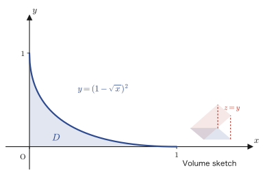
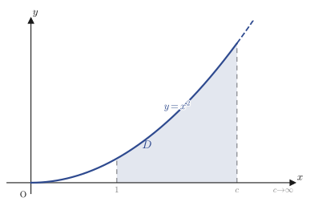

Chapter 7Multiple Integrals (Integration of Multivariable Functions)
In Chapter 6 we learned about partial derivatives as a tool for measuring the “steepness” of a function $z=f(x,y)$ of two variables. In this chapter we change direction and consider how to integrate a function of two variables. The one-variable integral $\displaystyle\int_a^b f(x)\,dx$ was a tool for measuring “the area under the curve $y=f(x)$.” If we lift the same idea up by just one dimension, the integral of a function $z=f(x,y)$ of two variables becomes a tool for measuring “the volume under the surface $z=f(x,y)$.” This is the star of this chapter, the multiple integral (when there are two variables, it is specifically called a double integral). In the language of materials science, the mass of an object is the sum of the density $\rho(x,y,z)$ over the whole volume, $\displaystyle\iiint\rho\,dxdydz$, and this too is nothing other than a multiple integral (in this case, a triple integral).
To actually compute a multiple integral, it suffices to carry out one-variable integrations in turn with respect to the two (or three) variables (this is called an iterated integral). However, the regions to which iterated integrals apply directly are limited, and for regions such as circles, ellipses, and obliquely tilted parallelograms, it is often much easier to compute after replacing the coordinates. Therefore, in the second half of this chapter we introduce the Jacobian, which describes how the area element $dxdy$ changes under a coordinate transformation, and we work through many computational examples using the polar coordinate transformation and linear transformations (rotations and oblique coordinates—that is, coordinate systems whose axes are not perpendicular). As the culmination, we prove the Gaussian integral $\displaystyle\int_{-\infty}^{\infty}e^{-x^2}dx=\sqrt{\pi}$, which appears everywhere in statistics and physics, by means of multiple integrals, and we then find the volume and surface area of a tetrahedron and of a sphere by several methods, so that you can feel firsthand that “there is more than one road to the same answer.”
- The meaning of the multiple integral $\displaystyle\iint_D f(x,y)\,dxdy$ (the volume under a surface) and how to compute it concretely by iterated integrals (two ways, obtained by interchanging the order of integration)
- Improper multiple integrals: how to define a multiple integral by means of the limit $\displaystyle\lim_{c\to\cdot}$ when the integrand has points at which it diverges or when the region of integration is unbounded
- The definition of the Jacobian $\left|\det J\right|$, the change-of-variables formula $dxdy=|J|\,dudv$ for the area element, and its geometric meaning (the factor by which a linear transformation magnifies area)
- The polar coordinate transformation $x=r\cos\theta,\ y=r\sin\theta$ (with Jacobian $r$), and the computation of Jacobians for linear transformations (rotations and oblique coordinates)
- Two proofs of the Gaussian integral $\displaystyle\int_{-\infty}^{\infty}e^{-x^2}dx=\sqrt{\pi}$ (the method of converting the multiple integral to polar coordinates, and the method using the squeeze theorem)
- Computing the volume of a tetrahedron by a triple integral (two solutions, with the order of integration changed)
- Finding the volume and surface area of a sphere by several methods—such as spherical coordinates, polar coordinates combined with integration over cross sections, and simple integration over cross sections—and comparing the advantages of each
Source notes: Yasuhide Mochizuki, Mathematics Notes: Calculus, pp. 63–72.
7.1 Definition of Multiple Integrals and Iterated Integrals
The definite integral $\displaystyle\int_a^b f(x)\,dx$ of a function of one variable was defined by the following procedure: “cut the interval $[a,b]$ into small pieces, multiply the width $\Delta x$ of each subinterval by the height $f(x)$ of the function there to get $f(x)\Delta x$ (the area of a thin rectangle), add these up, and make the pieces infinitely fine” (the Riemann-sum method that you learned in High School Mathematics, Chapter 5). Exactly the same idea can be used as it stands for a function $z=f(x,y)$ of two variables. Cut a region $D$ in the plane into small squares (with sides $\Delta x,\Delta y$), add up all the volumes $f(x,y)\Delta x\Delta y$ of the thin columns standing on the squares (base area $\Delta x\Delta y$, height $f(x,y)$), and make the pieces infinitely fine. We call this limit the multiple integral and write it $\displaystyle\iint_D f(x,y)\,dxdy$. The two integral signs written together are a notation expressing that “we cut finely and add up in both the $x$ direction and the $y$ direction.” (The symbol $D$ denoting a region in this chapter has nothing to do with the discriminant $D$ that appeared in the test for extrema in Chapter 6, Section 6.6; it is used only within this chapter, in the sense of “the plane region of integration.”)
Definition 7.1: Multiple integral (double integral)
For a function $f(x,y)$ defined on a bounded region $D$ in the plane, divide $D$ into small rectangles and form the sum of the products of the area $\Delta x_i\Delta y_j$ of each rectangle and the value $f(x_i,y_j)$ of the function at one point in that rectangle:
$$ \sum_{i,j} f(x_i,y_j)\,\Delta x_i\Delta y_j $$If this sum converges to some value as the subdivision is made infinitely fine, that limit is called the multiple integral of $f(x,y)$ over $D$ and is written
$$ \iint_D f(x,y)\,dxdy $$When $f(x,y)\ge0$, the multiple integral $\displaystyle\iint_D f(x,y)\,dxdy$ equals the volume of the solid whose base is the region $D$ and whose roof is the surface $z=f(x,y)$.
Now, how do we actually compute this volume? The key is the fact that a double sum can be computed by splitting it into two successive sums of one variable (= integrals of one variable). This is called an iterated integral. Depending on the shape of the region $D$, there are two ways to write it.
Formula 7.1: Iterated integrals
(I) When the region can be written as $D=\{(x,y)\mid a\le x\le b,\ g_1(x)\le y\le g_2(x)\}$ (a form in which, for each fixed $x$, the range $[g_1(x),g_2(x)]$ over which $y$ moves is determined),
$$ \iint_D f(x,y)\,dxdy=\int_a^b\left\{\int_{g_1(x)}^{g_2(x)} f(x,y)\,dy\right\}dx \qquad\text{(integrate with respect to $y$ first)} $$(II) When the region can be written as $D=\{(x,y)\mid c\le y\le d,\ h_1(y)\le x\le h_2(y)\}$ (a form in which, for each fixed $y$, the range $[h_1(y),h_2(y)]$ over which $x$ moves is determined),
$$ \iint_D f(x,y)\,dxdy=\int_c^d\left\{\int_{h_1(y)}^{h_2(y)} f(x,y)\,dx\right\}dy \qquad\text{(integrate with respect to $x$ first)} $$Intuition: Why two successive integrations suffice
The inner integral $\displaystyle\int_{g_1(x)}^{g_2(x)} f(x,y)\,dy$ in the formula (I) represents the “slice in the $y$ direction” obtained when $x$ is fixed at some value—the area of the cross section obtained by cutting the solid thinly with the plane $x=$ (constant). Since this cross-sectional area changes with the value of $x$, we can regard it as a function of $x$, $S(x)=\displaystyle\int_{g_1(x)}^{g_2(x)} f(x,y)\,dy$. All that remains is to integrate this cross-sectional area $S(x)$ from $x=a$ to $x=b$ (= to stack the thin slices up in the $x$ direction), which gives the volume of the whole solid. This is exactly the same idea as the formula “volume of a solid $=\displaystyle\int_a^b S(x)\,dx$ ($S(x)$ is the cross-sectional area)” that you learned in high school mathematics, and in fact we also use this idea of integrating cross sections when computing the volumes of the tetrahedron and the sphere in Sections 7.6 and 7.7. When the region $D$ has the form (II), just exchange the roles of $x$ and $y$ and repeat the same argument.
Why?: Integrating in either order gives the same answer
(I) and (II) of Formula 7.1 compute the same multiple integral $\displaystyle\iint_D f(x,y)\,dxdy$ and differ only in how the strips are cut (vertically or horizontally); since both find the volume of the same solid, the answers must agree. This fact that “the order of integration may be exchanged” always holds for regions on which $f$ is continuous (in university analysis it is treated rigorously as Fubini's theorem). Which order is easier to compute with depends on the shape of the region $D$ and on the integrand, so when computing, first sketch the region and see which way of cutting makes the limits of integration easier to write. Let us see how to choose between the two in Example 7.1 and Example 7.2 below.
Example 7.1: Warm-up: a multiple integral over a rectangular region
Find the multiple integral $\displaystyle\iint_D xy\,dxdy$ of the function $f(x,y)=xy$ over the region $D=\{(x,y)\mid 0\le x\le1,\ 0\le y\le2\}$.
Solution. Since $D$ is a rectangle, the range $[0,1]$ of $x$ and the range $[0,2]$ of $y$ do not depend on each other (this is the special case of Formula 7.1 (I) in which $g_1(x)=0,\,g_2(x)=2$ are constant functions). Integrating first with respect to $y$, we get
$$ \int_0^2 xy\,dy=x\Big[\frac{y^2}{2}\Big]_0^2=x\cdot\frac{4}{2}=2x $$(We integrated with respect to $y$, regarding $x$ as a constant. An antiderivative of $xy$ with respect to $y$ is $x\cdot\dfrac{y^2}{2}$.) Then, integrating with respect to $x$, we get
$$ \iint_D xy\,dxdy=\int_0^1 2x\,dx=\Big[x^2\Big]_0^1=1 $$Let us also check that integrating with respect to $x$ first gives the same result. We have $\displaystyle\int_0^1 xy\,dx=y\Big[\frac{x^2}{2}\Big]_0^1=\frac{y}{2}$, and then $\displaystyle\int_0^2\frac{y}{2}\,dy=\Big[\frac{y^2}{4}\Big]_0^2=1$, so the two results indeed agree (verified with SymPy).
Next, let us look at the first worked example in the original notes. This time the region $D$ is not a rectangle but a figure bounded by curves.
Example 7.2: Multiple integral over the region $\sqrt{x}+\sqrt{y}\le1$
Find the multiple integral $V=\displaystyle\iint_D y\,dxdy$ of the function $f(x,y)=y$ over the region $D=\{(x,y)\mid \sqrt{x}+\sqrt{y}\le1\}$.
Solution. First we check the shape of the region $D$. For $\sqrt{x}$ and $\sqrt{y}$ to be defined, we need $x\ge0,\,y\ge0$. Also, from $\sqrt{x}\le1$ ($\because\sqrt{y}\ge0$ together with $\sqrt{x}+\sqrt{y}\le1$) we get $0\le x\le1$, and similarly $0\le y\le1$. Solving the boundary curve $\sqrt{x}+\sqrt{y}=1$ for $y$, we square both sides of $\sqrt{y}=1-\sqrt{x}$ and obtain
$$ y=(1-\sqrt{x})^2\qquad(0\le x\le1) $$(Note that we squared only after checking that $1-\sqrt{x}\ge0$, that is, $x\le1$.) Therefore $D$ is the set of points satisfying $0\le y\le(1-\sqrt{x})^2$ in the range $0\le x\le1$. This is exactly the form of Formula 7.1 (I) (with $g_1(x)=0,\ g_2(x)=(1-\sqrt{x})^2$).

Method 1 (integrate with respect to $y$ first)
$$ V=\int_0^1\int_0^{(1-\sqrt{x})^2} y\,dy\,dx $$For the inner integral, since an antiderivative of $y$ is $y^2/2$, we have
$$ \int_0^{(1-\sqrt{x})^2} y\,dy=\Big[\frac{y^2}{2}\Big]_0^{(1-\sqrt{x})^2}=\frac{1}{2}(1-\sqrt{x})^4 $$Therefore it suffices to compute
$$ V=\int_0^1 \frac{1}{2}(1-\sqrt{x})^4\,dx $$Using the substitution $t=1-\sqrt{x}$ (so $x=(1-t)^2$, $dx=-2(1-t)\,dt$, and $t:1\to0$ when $x:0\to1$), we get
$$ V=\int_1^0 \frac{1}{2}t^4\cdot\{-2(1-t)\}\,dt=\int_0^1 t^4(1-t)\,dt=\int_0^1(t^4-t^5)\,dt=\Big[\frac{t^5}{5}-\frac{t^6}{6}\Big]_0^1=\frac{1}{5}-\frac{1}{6}=\frac{1}{30} $$(The original notes did not write out the intermediate steps of the substitution and recorded only the result, so here we have supplied the entire computation of the integration by substitution.) Hence $V=\dfrac{1}{30}$.
Method 2 (integrate with respect to $x$ first). This time, solving the boundary equation $y=(1-\sqrt{x})^2$ for $x$, we find by symmetry that $x=(1-\sqrt{y})^2$ ($0\le y\le1$), and
$$ V=\int_0^1\int_0^{(1-\sqrt{y})^2} y\,dx\,dy $$In the inner integral, the integrand $y$ is a constant that does not depend on $x$, so we only need to multiply by the width in $x$.
$$ \int_0^{(1-\sqrt{y})^2} y\,dx=y\cdot(1-\sqrt{y})^2 $$Therefore we compute
$$ V=\int_0^1 y(1-\sqrt{y})^2\,dy $$Expanding $(1-\sqrt{y})^2=1-2\sqrt{y}+y$, we get
$$ V=\int_0^1\left(y-2y^{3/2}+y^2\right)dy=\Big[\frac{y^2}{2}-2\cdot\frac{y^{5/2}}{5/2}+\frac{y^3}{3}\Big]_0^1=\frac12-\frac45+\frac13 $$Putting the fractions over a common denominator gives $\dfrac12-\dfrac45+\dfrac13=\dfrac{15}{30}-\dfrac{24}{30}+\dfrac{10}{30}=\dfrac{1}{30}$. This agrees with Method 1 (both methods verified with SymPy; the original notes also record the same result $\frac{1}{30}$).
7.2 Examples of Improper Multiple Integrals
Math Note: Extending improper integrals to two variables
In Chapter 5 we used limits to define definite integrals in which the integrand diverges at an endpoint of the interval, or in which the interval of integration extends to infinity (these are called improper integrals). For example, since the integrand of $\displaystyle\int_0^1\frac{dx}{\sqrt{x}}$ diverges at $x=0$, we defined $\displaystyle\int_0^1\frac{dx}{\sqrt{x}}=\lim_{c\to+0}\int_c^1\frac{dx}{\sqrt{x}}$. Exactly the same idea can be used for multiple integrals. When the integrand $f(x,y)$ diverges at some point of the region $D$, or when $D$ itself extends infinitely, we first compute the multiple integral over a region $D_c$ that stays just a little away from the “dangerous part” of $D$ ($c$ is a small parameter, or a large cutoff radius), and then take the limit $c\to0$ (or $c\to\infty$). This is called an improper multiple integral. In this section we treat two examples that use this idea.
Example 7.3: An improper multiple integral whose integrand diverges at the origin
Find the improper multiple integral $\displaystyle\iint_D\frac{dxdy}{\sqrt{x^2+y^2}}$ of the function $f(x,y)=\dfrac{1}{\sqrt{x^2+y^2}}$ over the region $D=\{(x,y)\mid 0\le y\le x\le1\}$ (a right triangle with a vertex at the origin $(0,0)$).
Solution. The integrand $f(x,y)=1/\sqrt{x^2+y^2}$ diverges at the origin $(0,0)$, where the denominator becomes $0$. In $D$, the origin falls exactly on a vertex of the triangle. Figure 7.5 shows this divergence as a three-dimensional picture (as we approach the origin, the surface $z=f(x,y)$ stretches without bound both upward and downward, taking the shape of a funnel (horn)). We therefore first consider only the part $x\ge c$ ($c$ a small positive number), and let $c\to+0$ afterwards.
Math Note: The formula for $\displaystyle\int\frac{dy}{\sqrt{y^2+a^2}}$
When $a$ is a constant, $\displaystyle\int\frac{dy}{\sqrt{y^2+a^2}}=\ln\left|y+\sqrt{y^2+a^2}\right|+C$ (a formula found in tables of integrals. Differentiating the right-hand side with respect to $y$ gives $\dfrac{d}{dy}\ln(y+\sqrt{y^2+a^2})=\dfrac{1+\frac{y}{\sqrt{y^2+a^2}}}{y+\sqrt{y^2+a^2}}=\dfrac{\sqrt{y^2+a^2}+y}{\sqrt{y^2+a^2}\,(y+\sqrt{y^2+a^2})}=\dfrac{1}{\sqrt{y^2+a^2}}$, which confirms that we do indeed get back the integrand).
Setting $a=x$ in this formula (we integrate with respect to $y$ treating $x$ as a constant, so $a^2=x^2$), the inner integral is
$$ \int_0^{x}\frac{1}{\sqrt{x^2+y^2}}\,dy=\Big[\ln\big|y+\sqrt{x^2+y^2}\big|\Big]_0^{x} =\ln\big|x+\sqrt{2}\,x\big|-\ln|x| $$(Substituting $y=x$ gives $\sqrt{x^2+x^2}=\sqrt{2x^2}=\sqrt2\,x$ (since $x>0$), and substituting $y=0$ gives $\sqrt{x^2}=x$.) Using the property of logarithms $\ln A-\ln B=\ln(A/B)$ to simplify, we get
$$ \ln\big|(1+\sqrt2)x\big|-\ln|x|=\ln(1+\sqrt2)+\ln x-\ln x=\ln(1+\sqrt2) $$This is a constant that does not depend on $x$ at all (this reflects the fact that the integrand $1/\sqrt{x^2+y^2}$ has the property—homogeneity—that “its value does not change when $x,y$ are enlarged or reduced by the same factor”). Therefore,
$$ V=\lim_{c\to+0}\int_c^1 \ln(1+\sqrt{2})\,dx=\lim_{c\to+0}\Big\{(1-c)\ln(1+\sqrt2)\Big\}=\ln(1+\sqrt2) $$(Since $\ln(1+\sqrt2)$ is a constant independent of $x$, integrating with respect to $x$ merely multiplies it by the width $(1-c)$.) As $c\to+0$ we have $1-c\to1$, so finally we obtain
$$ \iint_D\frac{dxdy}{\sqrt{x^2+y^2}}=\ln(1+\sqrt2)\approx0.8814 $$(verified with SymPy).
Example 7.4: An improper multiple integral over an unbounded region
Find the improper multiple integral $\displaystyle\iint_D\frac{dxdy}{x^4+y^2}$ of the function $f(x,y)=\dfrac{1}{x^4+y^2}$ over the region $D=\{(x,y)\mid 1\le x,\ 0\le y\le x^2\}$ (a region extending infinitely in the $x$ direction).

Solution. Since the region extends all the way to $x\to\infty$, we cut it off at $1\le x\le c$ ($c$ is a large positive number), compute, and let $c\to\infty$ afterward.
$$ V=\iint_D\frac{dxdy}{x^4+y^2}=\lim_{c\to\infty}\int_1^c\int_0^{x^2}\frac{1}{x^4+y^2}\,dy\,dx $$In the inner integral we regard $x$ as a constant. Noting that we can factor $x^4+y^2=x^4\left(1+\left(\dfrac{y}{x^2}\right)^2\right)$, we can use the integration formula for the inverse tangent function, $\displaystyle\int\frac{dt}{1+t^2}=\tan^{-1}t+C$ ($t=y/x^2$, $dt=dy/x^2$).
$$ \int_0^{x^2}\frac{1}{x^4+y^2}\,dy=\frac{1}{x^4}\int_0^{x^2}\frac{1}{1+\left(\frac{y}{x^2}\right)^2}\,dy =\frac{1}{x^4}\left[x^2\tan^{-1}\frac{y}{x^2}\right]_0^{x^2} $$(Substituting $t=y/x^2$ gives $dy=x^2\,dt$, so $\displaystyle\int\frac{dy}{1+(y/x^2)^2}=x^2\int\frac{dt}{1+t^2}=x^2\tan^{-1}t=x^2\tan^{-1}(y/x^2)$.) Substituting $y=x^2$ gives $\tan^{-1}(x^2/x^2)=\tan^{-1}1=\dfrac{\pi}{4}$, and substituting $y=0$ gives $\tan^{-1}0=0$. Therefore we obtain
$$ \int_0^{x^2}\frac{1}{x^4+y^2}\,dy=\frac{1}{x^4}\cdot x^2\left(\frac{\pi}{4}-0\right)=\frac{1}{x^2}\cdot\frac{\pi}{4} $$Integrating this from $x=1$ to $x=c$, we get
$$ V=\lim_{c\to\infty}\int_1^c \frac{\pi}{4}\cdot\frac{1}{x^2}\,dx =\lim_{c\to\infty}\frac{\pi}{4}\left[-\frac{1}{x}\right]_1^{c} =\lim_{c\to\infty}\frac{\pi}{4}\left(1-\frac{1}{c}\right) $$Since $1/c\to0$ as $c\to\infty$, we obtain
$$ \iint_D\frac{dxdy}{x^4+y^2}=\frac{\pi}{4} $$(Verified with SymPy. In the computation in the original notes, there was a small note in the margin confirming the intermediate evaluations $\tan^{-1}1=\pi/4$ and $\tan^{-1}0=0$, so the main text also states the basis for those evaluations explicitly.)
7.3 The Jacobian (Change of Variables and the Area Element)
Why?: An example where we want to change coordinates
Consider the following multiple integral. We want to find the multiple integral $\displaystyle\iint_D f(x,y)\,dxdy$ of the function $f(x,y)=(2x+y)\sin(2x-y)$ over the region $D=\{(x,y)\mid0\le2x+y\le\pi,\ 0\le2x-y\le\pi\}$. The region $D$ is a parallelogram bounded by linear expressions in $x,y$, and the expression inside $f(x,y)$ is also built from the two linear expressions $2x+y$ and $2x-y$. So if we introduce new variables $2x+y=u$, $2x-y=v$, the region becomes the simple rectangle $0\le u\le\pi,\ 0\le v\le\pi$, and the integrand also takes the simple form $u\sin v$. Solving the two equations for $x,y$, we can also write the change of variables as
$$ x=\frac{u+v}{4},\qquad y=\frac{u-v}{2} $$(This can be checked by adding the equations $2x+y=u$ and $2x-y=v$ side by side, which gives $4x=u+v$, and subtracting them side by side, which gives $2y=u-v$.) However, a problem arises here. The multiple integral was defined in terms of the area element $dxdy$, so if we replace the variables by $u,v$, we must also rewrite $dxdy$ as $dudv$. But $dxdy\neq dudv$ (as we will verify later, in this example we actually have $dxdy=\frac14\,dudv$). What solves this problem of “how to transform the area element” is the star of this section, the Jacobian.
Math Note: Determinants of order 2 (a preview)
The definition of the Jacobian requires the determinant of a square matrix of order 2. The general theory of determinants is studied in Chapter 8, but in this chapter we use only the simplest case below. For a square matrix $\begin{pmatrix}a&b\\c&d\end{pmatrix}$ of order 2, we define its determinant as
$$ \det\begin{pmatrix}a&b\\c&d\end{pmatrix}=\begin{vmatrix}a&b\\c&d\end{vmatrix}:=ad-bc $$(The symbol $\begin{vmatrix}\cdot\end{vmatrix}$ denotes a determinant. We use vertical bars to distinguish it from the square brackets $[\ ]$ and the parentheses $(\ )$ that denote a matrix.) It suffices to remember it as “the product along the main diagonal (upper left to lower right) minus the product along the anti-diagonal (upper right to lower left).”
Definition 7.2: Jacobian
Suppose $x=x(u,v)$ and $y=y(u,v)$ are given as functions of $u,v$. Then the matrix
$$ J=\begin{pmatrix}\pdiff{x}{u} & \pdiff{x}{v}\\[2mm] \pdiff{y}{u} & \pdiff{y}{v}\end{pmatrix} $$is called the Jacobian matrix (of $x,y$ with respect to $u,v$), and its determinant
$$ \det J=\begin{vmatrix}\pdiff{x}{u} & \pdiff{x}{v}\\[2mm] \pdiff{y}{u} & \pdiff{y}{v}\end{vmatrix} $$is called the Jacobian (also known as the Jacobian determinant). The area element is then given by
\begin{equation} dxdy=|J|\,dudv=\left|\begin{vmatrix}\pdiff{x}{u} & \pdiff{x}{v}\\[2mm] \pdiff{y}{u} & \pdiff{y}{v}\end{vmatrix}\right|dudv \label{eq:7-jacobian} \end{equation}(Here $|J|$ is the absolute value of the determinant $\det J$.) We derive below why this formula holds.
7.3.1 The total differential and the Jacobian matrix as a linear transformation
Suppose $x=x(u,v)$ and $y=y(u,v)$. By the total differential formula learned in Chapter 6—the first-order (linear) approximation of a function of two variables—the small changes in $x,y$ corresponding to the respective small changes $du,dv$ in $u,v$ are given by
$$ \begin{cases} dx = \pdiff{x}{u}\,du + \pdiff{x}{v}\,dv & \cdots① \\[2mm] dy = \pdiff{y}{u}\,du + \pdiff{y}{v}\,dv & \cdots② \end{cases} $$This means that $dx,dy$ can be expressed as linear expressions (linear combinations) in $du,dv$, and they can be written together, using a matrix and a vector, as follows.
$$ \begin{pmatrix} dx \\ dy \end{pmatrix} = \begin{pmatrix} \pdiff{x}{u} & \pdiff{x}{v} \\[2mm] \pdiff{y}{u} & \pdiff{y}{v} \end{pmatrix}\begin{pmatrix} du \\ dv \end{pmatrix} \qquad\cdots③ $$(The product of a matrix and a vector is computed by taking the inner product of each row of the matrix with the vector; the first row corresponds exactly to Eq. ① and the second row to Eq. ②. The definition of the matrix product will be studied again in Chapter 8.) In what follows, to make the notation easier to read, let $dx=X$, $dy=Y$, $du=U$, $dv=V$. Then Eq. ③ becomes
$$ \begin{pmatrix} X \\ Y \end{pmatrix} = \begin{pmatrix} \pdiff{x}{u} & \pdiff{x}{v} \\[2mm] \pdiff{y}{u} & \pdiff{y}{v} \end{pmatrix}\begin{pmatrix} U \\ V \end{pmatrix} \qquad\cdots\text{④} $$(In the original notes, although this equation has the same content as Eq. ③ on the previous page, it was numbered “⑤” when it was referred to. In copying out the notes we kept the numbers of the original notes as they were, but in this book we refer to the equations below by the consecutive numbers ① through ⑥. There is no error in the content itself.) We define the area element $dxdy$ on the $XY$-plane to be the image on the $XY$-plane, under Eq. ④, of the area element $dudv=UV$ on the $UV$-plane (the area of the rectangle with side lengths $U,V$).
7.3.2 Geometric derivation of the transformation formula for the area element
In the $UV$-plane, let $P(U,0)$ be the point reached by moving a distance $U$ from the origin $O$ in the direction of the $U$-axis, and let $Q(0,V)$ be the point reached by moving a distance $V$ in the direction of the $V$-axis. The area of the rectangle (with side lengths $U,V$) formed by joining $O,P,Q$ and the fourth vertex is exactly $UV=dudv$.
Suppose that $\vec{OP}=(U,0)$ and $\vec{OQ}=(0,V)$ are mapped by Eq. ④ to $\vec{OP'}=(X_1,Y_1)$ and $\vec{OQ'}=(X_2,Y_2)$, respectively. Substituting $(U,V)=(U,0)$ into Eq. ④, we get
$$ \begin{pmatrix} X_1 \\ Y_1 \end{pmatrix} = \begin{pmatrix} \pdiff{x}{u} & \pdiff{x}{v} \\[2mm] \pdiff{y}{u} & \pdiff{y}{v} \end{pmatrix}\begin{pmatrix} U \\ 0 \end{pmatrix} = \begin{pmatrix} \pdiff{x}{u}\,U \\[2mm] \pdiff{y}{u}\,U \end{pmatrix} $$(The product of the matrix and the vector $(U,0)$ is the first column of the matrix multiplied by $U$. The entries $\pdiff{x}{v},\pdiff{y}{v}$ of the second column are multiplied by $0$ and vanish.) Similarly, substituting $(U,V)=(0,V)$ into Eq. ④, we get
$$ \begin{pmatrix} X_2 \\ Y_2 \end{pmatrix} = \begin{pmatrix} \pdiff{x}{u} & \pdiff{x}{v} \\[2mm] \pdiff{y}{u} & \pdiff{y}{v} \end{pmatrix}\begin{pmatrix} 0 \\ V \end{pmatrix} = \begin{pmatrix} \pdiff{x}{v}\,V \\[2mm] \pdiff{y}{v}\,V \end{pmatrix} $$Thus the rectangle $OPQ($fourth vertex$)$ in the $UV$-plane is mapped to a parallelogram in the $XY$-plane whose vertices are $O,P',Q'$ and the fourth vertex (in general, a linear transformation maps a parallelogram to a parallelogram, because the parallelism of the sides is preserved as long as $\vec{OP'}$ is not a constant multiple of $\vec{OQ'}$).
Derivation: Area of the parallelogram $=|X_1Y_2-X_2Y_1|$
That the area of the parallelogram spanned by the two vectors $\vec{OP'}=(X_1,Y_1)$ and $\vec{OQ'}=(X_2,Y_2)$ is given by $|X_1Y_2-X_2Y_1|$ is exactly the formula for (the magnitude of) the cross product of vectors that you learned in high school mathematics. Therefore,
$$ dxdy = |X_1Y_2 - X_2Y_1| = \left| \pdiff{x}{u}U\cdot\pdiff{y}{v}V - \pdiff{x}{v}V\cdot\pdiff{y}{u}U \right| $$(Here we substituted $X_1=\pdiff{x}{u}U$, $Y_2=\pdiff{y}{v}V$, $X_2=\pdiff{x}{v}V$, $Y_1=\pdiff{y}{u}U$.) Factoring out $U,V$, we get
$$ = \left| \pdiff{x}{u}\cdot\pdiff{y}{v} - \pdiff{x}{v}\cdot\pdiff{y}{u} \right|\cdot UV $$Using $UV=dudv$, and noticing further that the expression inside the absolute value is exactly the determinant of the Jacobian in Definition 7.2, we obtain
$$ dxdy = \left|\begin{vmatrix} \pdiff{x}{u} & \pdiff{x}{v} \\[2mm] \pdiff{y}{u} & \pdiff{y}{v} \end{vmatrix}\right|\cdot dudv = |\det J|\cdot dudv = |J|\,dudv $$Thus the formula (the last equation of Definition 7.2) has been shown geometrically. ∎
Caution: Relation to the Jacobian of the inverse transformation
Let $J_1=\begin{pmatrix}\pdiff{x}{u}&\pdiff{x}{v}\\\pdiff{y}{u}&\pdiff{y}{v}\end{pmatrix}$ be the Jacobian matrix of $x=x(u,v),y=y(u,v)$, and let $J_2=\begin{pmatrix}\pdiff{u}{x}&\pdiff{u}{y}\\\pdiff{v}{x}&\pdiff{v}{y}\end{pmatrix}$ be the Jacobian matrix obtained when we solve conversely for $u=u(x,y),v=v(x,y)$. Then $J_1$ and $J_2$ are inverses of each other (this corresponds to the fact that going back and forth, $u,v\to x,y\to u,v$, returns us to where we started), and
\begin{equation} \det J_1\cdot\det J_2=1 \label{eq:7-inverse-jacobian} \end{equation}holds. This relation can be used as a shortcut for finding the area element when, in practice, the expressions that give $u,v$ in terms of $x,y$ are complicated and $J_1$ is hard to compute directly: we first compute $J_2=\pdiff{(u,v)}{(x,y)}$ and then obtain the area element from $|\det J_1|=1/|\det J_2|$ (this shortcut is actually used in Example 7.6 of Section 7.4). In the margin of the original notes there was a note to the effect that this relation holds not only for two variables but also for general $n$ variables ($n\ge3$), but the handwriting was faded and we could not make it out with certainty (it is known that the same fact holds in general $n$ dimensions as well, as a consequence of the relation between differentiation of composite functions of several variables and products of Jacobian matrices).
Now let us return to the original question—the transformation $2x+y=u$, $2x-y=v$—and actually compute the Jacobian to find the area element.
Example 7.5: The Jacobian and the multiple integral for the change of variables $2x+y=u,\ 2x-y=v$
Solve the question posed at the beginning of this section ($D=\{0\le2x+y\le\pi,\ 0\le2x-y\le\pi\}$, $f(x,y)=(2x+y)\sin(2x-y)$) by actually carrying out a change of variables.
Solution. Since $x=\dfrac{u+v}{4}$ and $y=\dfrac{u-v}{2}$, the Jacobian matrix is
$$ J=\begin{pmatrix}\pdiff{x}{u}&\pdiff{x}{v}\\[2mm]\pdiff{y}{u}&\pdiff{y}{v}\end{pmatrix}=\begin{pmatrix}\dfrac14&\dfrac14\\[2mm]\dfrac12&-\dfrac12\end{pmatrix} $$(Differentiating $x=(u+v)/4$ partially with respect to $u$ gives $1/4$, and differentiating with respect to $v$ also gives $1/4$. Differentiating $y=(u-v)/2$ partially with respect to $u$ gives $1/2$, and differentiating with respect to $v$ gives $-1/2$.) Using the formula for a determinant of order 2 in Definition 7.2 (see the Math Note), the Jacobian is
$$ \det J=\frac14\times\left(-\frac12\right)-\frac14\times\frac12=-\frac18-\frac18=-\frac14,\qquad |J|=\frac14 $$Therefore $dxdy=\dfrac14\,dudv$. Directly from the definitions $u=2x+y$ and $v=2x-y$, the region $D$ corresponds to $0\le u\le\pi$, $0\le v\le\pi$ (a square of side $\pi$). The multiple integral can be rewritten as
$$ \iint_D(2x+y)\sin(2x-y)\,dxdy=\int_0^\pi\int_0^\pi u\sin v\cdot\frac14\,dudv $$Since the integrand is the product of a function of $u$ alone and a function of $v$ alone, it can be factored into a product of two single-variable integrals (we will use this technique repeatedly from the next section on). Thus we obtain
$$ =\frac14\left(\int_0^\pi u\,du\right)\left(\int_0^\pi\sin v\,dv\right) =\frac14\cdot\Big[\frac{u^2}{2}\Big]_0^\pi\cdot\Big[-\cos v\Big]_0^\pi =\frac14\cdot\frac{\pi^2}{2}\cdot\big(-(-1)-(-1)\big) $$(Here $\big[-\cos v\big]_0^\pi=-\cos\pi-(-\cos0)=-(-1)-(-1)=1+1=2$.)
$$ =\frac14\cdot\frac{\pi^2}{2}\cdot2=\frac{\pi^2}{4} $$In this way, we have seen that the multiple integral, which at first looked hard to compute, can be solved in just a few lines by the change of coordinates using the Jacobian (verified with SymPy). Incidentally, this pair $u=2x+y,\,v=2x-y$ is an example of a pair of coordinate axes that are not mutually orthogonal—oblique coordinates (the line along which the value of $u$ is constant, $2x+y=$ (constant), and the line along which the value of $v$ is constant, $2x-y=$ (constant), do not meet at right angles).
7.4 Examples of Computing Multiple Integrals: Applications of Change of Variables
Using the transformation formula for the area element, $dxdy=|J|\,dudv$, derived in the previous section, let us compute two actual multiple integrals.
Example 7.6: Change of variables on a parallelogram region
Find the multiple integral $V=\displaystyle\iint_D f(x,y)\,dxdy$ of the function $f(x,y)=\dfrac{\tan^{-1}(x-y)}{x+y}$ over the region $D=\left\{(x,y)\;\middle|\; 1\le x+y\le 2,\ 0\le x-y\le 1\right\}$ (a parallelogram).
Solution. Let $u=x+y$ and $v=x-y$; then $D$ corresponds to $1\le u\le2$, $0\le v\le1$ (a rectangle). To find the Jacobian, we may express $x,y$ in terms of $u,v$ and compute directly, or we may use the shortcut described in the Caution (Section 7.3, Eq. \eqref{eq:7-inverse-jacobian})—first computing the Jacobian matrix $J_2$ of the inverse transformation $u=u(x,y),v=v(x,y)$, and then setting $|\det J_1|=1/|\det J_2|$. Here we use the shortcut. Partially differentiating $u=x+y,\,v=x-y$ with respect to $x,y$, we obtain
$$ J_2=\begin{pmatrix}\pdiff{u}{x}&\pdiff{u}{y}\\[2mm]\pdiff{v}{x}&\pdiff{v}{y}\end{pmatrix}=\begin{pmatrix}1&1\\1&-1\end{pmatrix},\qquad \det J_2=1\times(-1)-1\times1=-2 $$Therefore $|\det J_1|=1/|\det J_2|=1/2$. (If we compute $J_1$ directly from $x=(u+v)/2$ and $y=(u-v)/2$, then $\det J_1=\dfrac12\times\left(-\dfrac12\right)-\dfrac12\times\dfrac12=-\dfrac14-\dfrac14=-\dfrac12$, so $|\det J_1|=1/2$, which agrees. The computation in the original notes was written as a mixture of these two ways of computing—the relation $1/|\det J_2|$ coming from the inverse matrix and the directly computed $|\det J_1|$—so this book presents the two justifications separately.) Hence $dxdy=\dfrac12\,dudv$. The integrand can be rewritten as $f=\dfrac{\tan^{-1}(x-y)}{x+y}=\dfrac{\tan^{-1}v}{u}$, so
$$ V=\int_0^1\int_1^2 \frac{\tan^{-1}v}{u}\cdot\frac12\,dudv =\frac12\left(\int_1^2\frac{du}{u}\right)\left(\int_0^1\tan^{-1}v\,dv\right) $$(Since the integrand is the product of a function of $u$ alone and a function of $v$ alone, the integral can be factored into a product of two single-variable integrals regardless of the order of integration.) First, the integral in $u$ is
$$ \int_1^2\frac{du}{u}=\big[\ln u\big]_1^2=\ln2-\ln1=\ln2 $$Next, for the integral in $v$, $\displaystyle\int_0^1\tan^{-1}v\,dv$, we use integration by parts. Let $f=\tan^{-1}v$ and $dg=dv$; then $df=\dfrac{dv}{1+v^2}$ and $g=v$, so
$$ \int\tan^{-1}v\,dv=v\tan^{-1}v-\int\frac{v}{1+v^2}\,dv=v\tan^{-1}v-\frac12\ln(1+v^2)+C $$(For $\displaystyle\int\frac{v}{1+v^2}dv$, the numerator is half the derivative of the denominator $\left(\frac{d}{dv}(1+v^2)=2v\right)$, so the substitution $t=1+v^2$ gives $\frac12\ln|t|=\frac12\ln(1+v^2)$.) Therefore we obtain
$$ \int_0^1\tan^{-1}v\,dv=\Big[v\tan^{-1}v-\frac12\ln(1+v^2)\Big]_0^1 =\left(1\cdot\frac{\pi}{4}-\frac12\ln2\right)-(0-0)=\frac{\pi}{4}-\frac12\ln2 $$Putting everything together, we obtain
$$ V=\frac12\cdot\ln2\cdot\left(\frac{\pi}{4}-\frac12\ln2\right)=\frac{\ln2}{2}\left(\frac{\pi}{4}-\frac{\ln2}{2}\right)=\frac{1}{8}(\pi-2\ln2)\ln2 $$(verified with SymPy; numerically, $V\approx0.1521$).
Example 7.7: Volume of the intersection of a hemisphere and a cylinder
Find the volume $V$ of the intersection of the hemisphere $x^2+y^2+z^2\le4,\ z\ge0$ and the cylinder $(x-1)^2+y^2\le1$.
Solution. The equation of the hemisphere is $z=\sqrt{4-(x^2+y^2)}$ (obtained by solving $x^2+y^2+z^2=4$ for $z$ in the range $z\ge0$). Therefore the required volume is the integral of the height of the hemisphere over the base $D=\{(x,y)\mid(x-1)^2+y^2\le1\}$ of the cylinder, namely
$$ V=\iint_D\sqrt{4-(x^2+y^2)}\,dxdy $$Using polar coordinates $x=r\cos\theta,\,y=r\sin\theta$ (with Jacobian $|J|=r$, Eq. \eqref{eq:7-polar-jacobian}; we derive it again in Example 7.8 of Section 7.5), the expression for the boundary of the cylinder becomes
$$ (r\cos\theta-1)^2+(r\sin\theta)^2\le1 \ \Longrightarrow\ r^2\cos^2\theta-2r\cos\theta+1+r^2\sin^2\theta\le1 \ \Longrightarrow\ r^2-2r\cos\theta\le0 $$(We simplified using $\cos^2\theta+\sin^2\theta=1$.) This factors as $r(r-2\cos\theta)\le0$, and since $r\ge0$, it means $0\le r\le2\cos\theta$ (this is meaningful only in the range $-\dfrac{\pi}{2}\le\theta\le\dfrac{\pi}{2}$, where $\cos\theta\ge0$; it is the circle with center $(1,0)$ and radius $1$ (the circle through the origin, $(x-1)^2+y^2=1$), and it is the region shown on the right of Figure 7.9). Hence,
$$ V=\iint_{D'}\sqrt{4-r^2}\cdot r\,drd\theta,\qquad D'=\left\{0\le r\le2\cos\theta,\ -\frac{\pi}{2}\le\theta\le\frac{\pi}{2}\right\} $$Here, both the integrand and the region of integration are invariant under the transformation $\theta\to-\theta$ (since $\cos(-\theta)=\cos\theta$, the upper limit $2\cos\theta$ does not change either). Therefore it suffices to halve the interval of integration for $\theta$ to $[0,\pi/2]$ and double the result.
$$ V=2\int_0^{\pi/2}\int_0^{2\cos\theta}\sqrt{4-r^2}\,r\,drd\theta $$For the inner integral, substituting $w=4-r^2$ ($dw=-2r\,dr$) gives
$$ \int r\sqrt{4-r^2}\,dr=-\frac12\int\sqrt{w}\,dw=-\frac12\cdot\frac{2}{3}w^{3/2}=-\frac13(4-r^2)^{3/2}+C $$Math Note: Checking the antiderivative
$\left\{-\dfrac13(4-r^2)^{3/2}\right\}'=-\dfrac13\cdot\dfrac32(4-r^2)^{1/2}\cdot(-2r)=r\sqrt{4-r^2}$, which indeed returns the original integrand (this is $\{(4-r^2)^{3/2}\}'=\frac32(4-r^2)^{1/2}\cdot(-2r)=-3r\sqrt{4-r^2}$ multiplied by $-1/3$. Only the computation of this check was written in the margin of the original notes).
Therefore,
$$ \int_0^{2\cos\theta}\sqrt{4-r^2}\,r\,dr=\Big[-\frac13(4-r^2)^{3/2}\Big]_0^{2\cos\theta} =-\frac13(4-4\cos^2\theta)^{3/2}+\frac13\cdot4^{3/2} $$We have $4-4\cos^2\theta=4\sin^2\theta$, and since $\sin\theta\ge0$ for $0\le\theta\le\pi/2$, $(4\sin^2\theta)^{3/2}=8\sin^3\theta$. Also, $4^{3/2}=8$. Hence we obtain
$$ \int_0^{2\cos\theta}\sqrt{4-r^2}\,r\,dr=-\frac83\sin^3\theta+\frac83=\frac83\left(1-\sin^3\theta\right) $$Integrating this with respect to $\theta$, we get
$$ V=2\int_0^{\pi/2}\frac83\left(1-\sin^3\theta\right)d\theta=\frac{16}{3}\left(\int_0^{\pi/2}d\theta-\int_0^{\pi/2}\sin^3\theta\,d\theta\right) $$We have $\displaystyle\int_0^{\pi/2}d\theta=\dfrac{\pi}{2}$. To evaluate $\displaystyle\int_0^{\pi/2}\sin^3\theta\,d\theta$, we decompose $\sin^3\theta=\sin\theta(1-\cos^2\theta)=\sin\theta-\sin\theta\cos^2\theta$ and substitute $c=\cos\theta$ ($dc=-\sin\theta\,d\theta$), which gives
$$ \int_0^{\pi/2}\sin^3\theta\,d\theta=\int_1^0(1-c^2)(-dc)=\int_0^1(1-c^2)\,dc=\Big[c-\frac{c^3}{3}\Big]_0^1=1-\frac13=\frac23 $$Therefore we obtain
$$ V=\frac{16}{3}\left(\frac{\pi}{2}-\frac23\right)=\frac{16}{3}\cdot\frac{\pi}{2}-\frac{16}{3}\cdot\frac23=\frac{8\pi}{3}-\frac{32}{9}=\frac{24\pi-32}{9}=\frac89(3\pi-4) $$(verified with SymPy; numerically, $V\approx4.822$).
7.5 Proof of the Gaussian Integral
In this section we prove the following equality, which appears everywhere in statistics (the normalization of the probability density function of the normal distribution) and in physics (partition functions in thermodynamics and quantum mechanics, and so on).
Theorem 7.1: Gaussian integral
$$ \int_{-\infty}^{\infty}e^{-x^2}\,dx=\sqrt{\pi} $$Why?: It cannot be proved with a single variable
It is known that an antiderivative of $e^{-x^2}$ cannot be expressed as a combination of “elementary functions” such as exponential functions, trigonometric functions, and polynomials (it can only be defined as a special function, the error function $\mathrm{erf}(x)$). In other words, the road of computing directly with the fundamental theorem of calculus, as in $\displaystyle\int_{-\infty}^{\infty}e^{-x^2}dx=\big[F(x)\big]_{-\infty}^{\infty}$, is closed. However, instead of squaring $e^{-x^2}$, we “make it a function of two variables”: if we consider the double integral of $e^{-x^2-y^2}=e^{-x^2}e^{-y^2}$ and convert it to polar coordinates, then at least the integral in $r$ can be carried out in terms of elementary functions. That a problem that cannot be solved in one variable becomes solvable by raising the dimension by one is an interesting phenomenon that is often seen in mathematics.
Example 7.8: Proof of the Gaussian integral (the method using polar coordinates)
By converting the double integral $\displaystyle\int_{-\infty}^{\infty}\int_{-\infty}^{\infty} e^{-x^2-y^2}\,dxdy$ to polar coordinates and evaluating it, prove that $\displaystyle\int_{-\infty}^{\infty}e^{-x^2}\,dx=\sqrt{\pi}$.
Solution. First, we confirm the relation between the double integral and the single-variable integral. The integration variables $x,y$ each range independently from $-\infty$ to $\infty$, so, using the law of exponents $e^{-x^2-y^2}=e^{-x^2}\cdot e^{-y^2}$, the double integral splits into a product of two identical single-variable integrals.
$$ \int_{-\infty}^{\infty}\int_{-\infty}^{\infty} e^{-x^2-y^2}\,dxdy =\left(\int_{-\infty}^{\infty}e^{-x^2}dx\right)\left(\int_{-\infty}^{\infty}e^{-y^2}dy\right) =\left(\int_{-\infty}^{\infty}e^{-x^2}dx\right)^2 $$(The integral with respect to $x$ and the integral with respect to $y$ have the same value; only the names of the variables differ.) Therefore, once the value of this double integral is found, its square root is the value of the Gaussian integral. So we change to the polar coordinates $x=r\cos\theta,\ y=r\sin\theta$ ($0\le r\lt\infty,\ 0\le\theta\lt2\pi$, which cover the entire plane). We have $x^2+y^2=r^2\cos^2\theta+r^2\sin^2\theta=r^2$, and, following Definition 7.2, the Jacobian is
\begin{equation} |J|=\left|\begin{vmatrix} \pdiff{x}{r} & \pdiff{x}{\theta} \\[2mm] \pdiff{y}{r} & \pdiff{y}{\theta} \end{vmatrix}\right| =\left|\begin{vmatrix} \cos\theta & -r\sin\theta \\ \sin\theta & r\cos\theta \end{vmatrix}\right| =\big|r\cos^2\theta-(-r\sin\theta)\sin\theta\big|=\big|r(\cos^2\theta+\sin^2\theta)\big|=r \label{eq:7-polar-jacobian} \end{equation}(Since $r\ge0$, the absolute value can be dropped.) This is the Jacobian of the polar coordinate transformation, and we have $dxdy=r\,drd\theta$. Therefore,
$$ \int_{-\infty}^{\infty}\int_{-\infty}^{\infty} e^{-x^2-y^2}\,dxdy = \int_0^{2\pi}\int_0^{\infty} e^{-r^2}\,r\,drd\theta $$The integrand $e^{-r^2}r$ is treated as an improper integral over the unbounded interval $[0,\infty)$. Taking the limit $c\to\infty$ and using the substitution $w=-r^2$ ($dw=-2r\,dr$), we get
$$ \int_0^{\infty} e^{-r^2}\,r\,dr=\lim_{c\to\infty}\int_0^{c}e^{-r^2}r\,dr=\lim_{c\to\infty}\Big[-\frac12e^{-r^2}\Big]_0^{c} =\lim_{c\to\infty}\left(-\frac12e^{-c^2}+\frac12\right)=\frac12 $$(Since $e^{-c^2}\to0$ as $c\to\infty$, the first term vanishes.) The result $1/2$ of the $r$-integral is a constant that does not depend on $\theta$, so we obtain
$$ \int_0^{2\pi}\int_0^{\infty} e^{-r^2}\,r\,drd\theta=\int_0^{2\pi}\frac12\,d\theta=\frac12\cdot2\pi=\pi $$That is, $\left(\displaystyle\int_{-\infty}^{\infty}e^{-x^2}dx\right)^2=\pi$. Since $e^{-x^2}\gt0$, the integral itself is positive, so, taking the square root, we obtain
$$ \int_{-\infty}^{\infty}e^{-x^2}\,dx=\sqrt{\pi} $$(verified with SymPy).
The original notes also give an alternative solution that shows the same conclusion by a different method—the squeeze theorem (covered in Chapter 1). It does not use polar coordinates; it is an elementary method that merely compares the area of a square with the areas of sectors.
Example 7.9: Alternative proof of the Gaussian integral (the squeeze theorem)
For $R\gt0$, consider the following three regions in the first quadrant:
$$ B_R=\left\{(x,y)\;\middle|\;x^2+y^2\le R^2,\,x\ge0,\,y\ge0\right\},\qquad A_R=\{(x,y)\mid0\le x\le R,\,0\le y\le R\},\qquad B_{\sqrt2R}=\left\{(x,y)\;\middle|\;x^2+y^2\le2R^2,\,x\ge0,\,y\ge0\right\} $$($B_R$ is the quarter disk of radius $R$, $A_R$ is the square of side $R$, and $B_{\sqrt2R}$ is the quarter disk of radius $\sqrt2R$.) Using the fact that $B_R\subset A_R\subset B_{\sqrt2R}$ (Figure 7.10), show that $\displaystyle\int_0^{\infty}e^{-x^2}\,dx=\dfrac{\sqrt\pi}{2}$.
Solution. Since $f(x,y)=e^{-x^2-y^2}\ge0$, the larger the region, the larger the value of the double integral (enlarging the region only adds nonnegative quantities). Therefore, from $B_R\subset A_R\subset B_{\sqrt2R}$ we immediately obtain the inequality
$$ \iint_{B_R}e^{-x^2-y^2}dxdy\ \le\ \iint_{A_R}e^{-x^2-y^2}dxdy\ \le\ \iint_{B_{\sqrt2R}}e^{-x^2-y^2}dxdy $$(In the notation of the original notes, this inequality reads $I_R\le J_R\le I_{\sqrt2R}$.) Let us compute each of the three double integrals. The double integral $J_R$ over the square $A_R$ can be evaluated directly as an iterated integral, since the region is a rectangle, and the same decomposition by the law of exponents as in Example 7.8 can be used.
$$ J_R=\int_0^R\int_0^R e^{-x^2}\cdot e^{-y^2}\,dxdy=\left(\int_0^R e^{-x^2}dx\right)\left(\int_0^R e^{-y^2}dy\right)=\left(\int_0^R e^{-x^2}dx\right)^2 $$For the double integral $I_R$ over the sector $B_R$, it suffices to convert to polar coordinates ($0\le r\le R,\ 0\le\theta\le\pi/2$). Carrying out the same computation as in Example 7.8, but cutting off the upper limit of integration at $R$ instead of $\infty$, we get
$$ I_R=\int_0^{\pi/2}\int_0^R e^{-r^2}\cdot r\,drd\theta =\int_0^{\pi/2}\Big[-\frac12e^{-r^2}\Big]_0^Rd\theta =\int_0^{\pi/2}\frac12\left(1-e^{-R^2}\right)d\theta =\frac{\pi}{4}\left(1-e^{-R^2}\right) $$Similarly, for $B_{\sqrt2R}$ we only replace the radius by $\sqrt2R$, so we obtain
$$ I_{\sqrt2R}=\int_0^{\pi/2}\int_0^{\sqrt2R} e^{-r^2}\cdot r\,drd\theta=\frac{\pi}{4}\left(1-e^{-2R^2}\right) $$Substituting the above into the squeeze inequality, we get
$$ \frac{\pi}{4}\left(1-e^{-R^2}\right)\ \le\ \left(\int_0^R e^{-x^2}dx\right)^2\ \le\ \frac{\pi}{4}\left(1-e^{-2R^2}\right) $$As $R\to\infty$, we have $e^{-R^2}\to0$ and $e^{-2R^2}\to0$, so both the left and right ends converge to $\dfrac{\pi}{4}$. By the squeeze theorem (if the left and right sides converge to the same value, the quantity between them also converges to that value), we obtain
$$ \lim_{R\to\infty}\left(\int_0^R e^{-x^2}dx\right)^2=\frac{\pi}{4} $$The left-hand side equals $\displaystyle\left(\int_0^{\infty}e^{-x^2}dx\right)^2$ (this is exactly the definition of the improper integral), so, taking the square root of both sides (the integral is positive since $e^{-x^2}\gt0$), we obtain
$$ \int_0^{\infty}e^{-x^2}\,dx=\sqrt{\frac{\pi}{4}}=\frac{\sqrt\pi}{2} $$(verified with SymPy. It is also consistent with the fact that the result $\displaystyle\int_{-\infty}^{\infty}e^{-x^2}dx=\sqrt\pi$ of Example 7.8, together with the evenness of $e^{-x^2}$, gives $\displaystyle\int_0^{\infty}e^{-x^2}dx=\frac12\int_{-\infty}^{\infty}e^{-x^2}dx=\frac{\sqrt\pi}{2}$.)
7.6 Further Applications of Change of Variables and the Volume of a Tetrahedron
Example 7.10: A change of variables that rotates a rhombic region by 45 degrees
Find the double integral $V=\displaystyle\iint_D f(x,y)\,dxdy$ of the function $f(x,y)=(x+y)e^{x-y}$ over the region $D=\{(x,y)\mid|x-1|+|y|\le1\}$ (Figure 7.11, left; a rhombus with center $(1,0)$ and vertices $(0,0),(1,1),(2,0),(1,-1)$).
Solution. We define the new variables by $u=\dfrac{x+y}{\sqrt2}$ and $v=\dfrac{x-y}{\sqrt2}$ (this transformation rotates the coordinate axes about the origin by $-45°$). Solving these equations in the reverse direction gives
$$ x=\frac{u+v}{\sqrt2},\qquad y=\frac{u-v}{\sqrt2} $$(adding and subtracting the defining equations side by side confirms that $u+v=\sqrt2 x$ and $u-v=\sqrt2 y$). The Jacobian is
$$ J=\begin{pmatrix}\pdiff{x}{u}&\pdiff{x}{v}\\[2mm]\pdiff{y}{u}&\pdiff{y}{v}\end{pmatrix}=\begin{pmatrix}\dfrac{1}{\sqrt2}&\dfrac{1}{\sqrt2}\\[2mm]\dfrac{1}{\sqrt2}&-\dfrac{1}{\sqrt2}\end{pmatrix},\qquad \det J=\frac{1}{\sqrt2}\times\left(-\frac1{\sqrt2}\right)-\frac1{\sqrt2}\times\frac1{\sqrt2}=-\frac12-\frac12=-1 $$so $|J|=1$.
Why?: The Jacobian of a rotation is always $1$
Computing the Jacobian of the general transformation $x=u\cos\alpha-v\sin\alpha,\ y=u\sin\alpha+v\cos\alpha$ that rotates the coordinate axes by an angle $\alpha$, we get $\det J=\cos\alpha\cdot\cos\alpha-(-\sin\alpha)\cdot\sin\alpha=\cos^2\alpha+\sin^2\alpha=1$, so $|J|=1$ always, regardless of the rotation angle $\alpha$. Geometrically this is only natural: rotating a figure does not change its area, so the area element also stays the same, $dxdy=dudv$. The transformation we are using this time corresponds to the rotation with $\alpha=-45°$.
Next we check how the region $D$ (the rhombus) is described in terms of $u,v$. Transforming the vertices $(0,0),(1,1),(2,0),(1,-1)$ by $u=(x+y)/\sqrt2,\,v=(x-y)/\sqrt2$, we get, in order, $(0,0)$, $(\sqrt2,0)$, $(\sqrt2,\sqrt2)$, $(0,\sqrt2)$ (for example, for $(1,1)$ we have $u=(1+1)/\sqrt2=\sqrt2,\,v=(1-1)/\sqrt2=0$), and these are nothing other than the four vertices of the square $D'=\{0\le u\le\sqrt2,\,0\le v\le\sqrt2\}$ of side $\sqrt2$. Therefore $D$ is mapped onto $D'$. Finally, we express the integrand in terms of $u,v$. From the definition of $u,v$ we can read off directly that $x+y=\sqrt2\,u$ and $x-y=\sqrt2\,v$ (this is precisely the reason for introducing $u,v$). Hence the integrand becomes
$$ (x+y)e^{x-y}=\sqrt2\,u\cdot e^{\sqrt2\,v} $$Putting all of this together,
$$ V=\int_0^{\sqrt2}\int_0^{\sqrt2}\sqrt2\,u\,e^{\sqrt2\,v}\,dudv =\sqrt2\left(\int_0^{\sqrt2}u\,du\right)\left(\int_0^{\sqrt2}e^{\sqrt2v}\,dv\right) $$We have $\displaystyle\int_0^{\sqrt2}u\,du=\Big[\frac{u^2}{2}\Big]_0^{\sqrt2}=\frac{2}{2}=1$ and $\displaystyle\int_0^{\sqrt2}e^{\sqrt2v}\,dv=\frac{1}{\sqrt2}\Big[e^{\sqrt2v}\Big]_0^{\sqrt2}=\frac{1}{\sqrt2}(e^{2}-1)$ (the exponent is $\sqrt2\times\sqrt2=2$). Therefore,
$$ V=\sqrt2\times1\times\frac{1}{\sqrt2}(e^2-1)=e^2-1 $$is obtained (verified with SymPy; numerically, $V\approx6.389$).
In the next example, going one step beyond the double integrals we have treated so far, we deal with the triple integral (the integral of a function of three variables, computed as an iterated integral with respect to the three variables). The idea is exactly the same as for double integrals; we simply add one more iterated integration.
Example 7.11: Volume of a tetrahedron (triple integral)
Find the triple integral $\displaystyle\iiint_V x\,dxdydz$ over the region $V=\{(x,y,z)\mid x,y,z\ge0,\ x+y+z\le1\}$ (the tetrahedron whose vertices are the origin and the three points $(1,0,0),(0,1,0),(0,0,1)$) by two methods that differ in the order of integration.
Solution (Method 1: in the order $z\to y\to x$). First we find the range over which $z$ varies when $x,y$ are fixed. From the conditions $x+y+z\le1,\,z\ge0$ we have
$$ 0\le z\le1-x-y $$So, if we integrate first with respect to $z$ (the multiple integral of $x$ takes a form in which a multiple integral over the base $D=\{(x,y)\mid x\ge0,y\ge0,x+y\le1\}$ (Figure 7.12, right) still remains), we get
$$ \iiint_V x\,dxdydz=\iint_D\left(\int_0^{1-x-y}x\,dz\right)dxdy=\iint_D x(1-x-y)\,dxdy $$(The inner integral is just an integration with respect to $z$ with $x$ regarded as a constant, so it becomes $x\cdot(1-x-y)$: we have simply multiplied by the height $1-x-y$.) Next, over $D=\{0\le x\le1,\,0\le y\le1-x\}$, we use the iterated integral that integrates first with respect to $y$ (Formula 7.1 (I)):
$$ =\int_0^1\left\{\int_0^{1-x}(1-x-y)x\,dy\right\}dx $$The inner integral (integrating with respect to $y$ with $x$ regarded as a constant) is
$$ \int_0^{1-x}(1-x-y)x\,dy=x\Big[(1-x)y-\frac{y^2}{2}\Big]_0^{1-x}=x\left\{(1-x)^2-\frac{(1-x)^2}{2}\right\}=x\cdot\frac{(1-x)^2}{2} $$(Substituting $y=1-x$ into $(1-x)y$ gives $(1-x)^2$, substituting $y=1-x$ into $y^2/2$ gives $(1-x)^2/2$, and subtracting leaves just half.) Therefore,
$$ \iiint_V x\,dxdydz=\int_0^1\left\{(1-x)^2x-\frac{x}{2}(1-x)^2\right\}dx=\int_0^1\frac{x}{2}(1-x)^2\,dx $$and it suffices to compute this last integral. Expanding $(1-x)^2=1-2x+x^2$ and simplifying, we get
$$ \frac{x}{2}(1-2x+x^2)=\frac{x}{2}-x^2+\frac{x^3}{2} $$ $$ \int_0^1\left(\frac{x}{2}-x^2+\frac{x^3}{2}\right)dx=\Big[\frac{x^2}{4}-\frac{x^3}{3}+\frac{x^4}{8}\Big]_0^1=\frac14-\frac13+\frac18 $$Bringing these to a common denominator (24), $\dfrac14-\dfrac13+\dfrac18=\dfrac{6}{24}-\dfrac{8}{24}+\dfrac{3}{24}=\dfrac{1}{24}$. Hence,
$$ \iiint_V x\,dxdydz=\frac{1}{24} $$is obtained.
Solution (Method 2: in the order $x\to y\to z$, leaving $z$ until the end). This time we first fix $z$, evaluate the double integral with respect to $x,y$ over the horizontal cross section $D_z=\{(x,y)\mid x\ge0,y\ge0,x+y\le1-z\}$ at height $z$ (Figure 7.13; a right triangle whose legs have length $1-z$), and finally integrate with respect to $z$.
$$ \iiint_V x\,dxdydz=\int_0^1\left(\int_0^{1-z}\int_0^{1-z-x}x\,dy\,dx\right)dz $$The innermost integral (integrating with respect to $y$ with $x,z$ fixed) is, since the integrand $x$ does not depend on $y$,
$$ \int_0^{1-z-x}x\,dy=x(1-z-x) $$Next we integrate with respect to $x$ from $0$ to $1-z$ ($z$ is again treated as a constant here).
$$ \int_0^{1-z}x(1-z-x)\,dx=\int_0^{1-z}\left\{(1-z)x-x^2\right\}dx =\Big[(1-z)\frac{x^2}{2}-\frac{x^3}{3}\Big]_0^{1-z} $$Substituting $x=1-z$ gives
$$ (1-z)\cdot\frac{(1-z)^2}{2}-\frac{(1-z)^3}{3}=\frac{(1-z)^3}{2}-\frac{(1-z)^3}{3}=(1-z)^3\left(\frac12-\frac13\right)=\frac{(1-z)^3}{6} $$(in the original notes this computation was written all at once, in a single line, as $\dfrac16(1-z)^3$, so in this book we have supplied the intermediate step of bringing the fractions to a common denominator). Finally, integrating with respect to $z$,
$$ \iiint_V x\,dxdydz=\int_0^1\frac{(1-z)^3}{6}\,dz=\frac16\Big[-\frac{(1-z)^4}{4}\Big]_0^1=\frac16\left(0+\frac14\right)=\frac{1}{24} $$is obtained. Both Method 1 and Method 2 gave the same value $\dfrac{1}{24}$ (both methods verified with SymPy).
7.7 Volume and Surface Area of a Sphere
In this section we use triple integrals to find the volume and surface area of a sphere. When dealing with rotationally symmetric figures such as circles and spheres, it is far easier to compute with the polar coordinates of space—spherical coordinates—than to stay with the Cartesian coordinates $(x,y,z)$.
Definition 7.3: Spherical coordinates
For a point $(x,y,z)$ in space, let $r=\sqrt{x^2+y^2+z^2}$ be its distance from the origin, let $\theta$ ($0\le\theta\le\pi$; the polar angle) be the angle measured from the positive direction of the $z$-axis, and let $\varphi$ ($0\le\varphi\lt2\pi$; the azimuthal angle, which plays the same role as $\theta$ in two-dimensional polar coordinates) be the angle measured in the $xy$-plane from the positive direction of the $x$-axis. Then we can write
$$ x=r\sin\theta\cos\varphi,\qquad y=r\sin\theta\sin\varphi,\qquad z=r\cos\theta $$These coordinates are called spherical coordinates.
Derivation: The Jacobian of spherical coordinates $dxdydz=r^2\sin\theta\,drd\theta d\varphi$
We view the transformation to spherical coordinates as a composition of two successive plane polar coordinate transformations. This lets us avoid determinants of order 3, which we have not yet learned.
Step 1. In the $xy$-plane (the equatorial plane), consider the two-dimensional polar coordinate transformation $x=\rho\cos\varphi,\ y=\rho\sin\varphi$ ($\rho=\sqrt{x^2+y^2}$), which we have already derived in Example 7.8 of Section 7.5. The $z$ coordinate is left unchanged ($z=z$). Therefore nothing is stretched or shrunk in the $z$ direction (the width $dz$ remains $dz$), and only in the $xy$ directions does the area change, by the factor $\rho$, the Jacobian of polar coordinates. Hence we have
$$ dxdydz=\rho\,d\rho\,d\varphi\,dz $$(One way to see this: within the thin horizontal slice at each height $z$, the two-dimensional area element changes to $dxdy=\rho\,d\rho d\varphi$, and we then simply stack these slices up, each multiplied by $dz$.)
Step 2. This time, in the plane containing the $z$-axis (the meridian plane, the left panel of Figure 7.14), we rewrite $\rho$ and $z$ as if they were polar coordinates. Regarding $\rho$ as the horizontal axis and $z$ as the vertical axis, and using the radial distance $r=\sqrt{\rho^2+z^2}$ ($=\sqrt{x^2+y^2+z^2}$, the distance from the origin) and the angle $\theta$ measured from the horizontal axis (the $\rho$-axis), we can write
$$ \rho=r\sin\theta,\qquad z=r\cos\theta $$(since it is the angle measured from the $\rho$-axis, sine and cosine ($\sin,\cos$) are interchanged compared with $x=r\cos\theta,y=r\sin\theta$ in Section 7.5, but this too is a variant of the same two-dimensional polar coordinate transformation, and the Jacobian takes the same form $|J|=r$ as in Eq. \eqref{eq:7-polar-jacobian}: from $\pdiff{\rho}{r}=\sin\theta,\ \pdiff{\rho}{\theta}=r\cos\theta,\ \pdiff{z}{r}=\cos\theta,\ \pdiff{z}{\theta}=-r\sin\theta$ we get $\det=\sin\theta\cdot(-r\sin\theta)-r\cos\theta\cdot\cos\theta=-r(\sin^2\theta+\cos^2\theta)=-r$, and so $|J|=r$). Hence we obtain
$$ d\rho\,dz=r\,drd\theta $$(since $\varphi$ is not changed at this stage, it simply remains as $d\varphi$).
Composition. Substituting the result of Step 2 into the result of Step 1, we obtain
\begin{equation} dxdydz=\rho\,d\rho\,d\varphi\,dz=\rho\cdot(r\,drd\theta)\cdot d\varphi=(r\sin\theta)\cdot r\,drd\theta d\varphi=r^2\sin\theta\,drd\theta d\varphi \label{eq:7-spherical-jacobian} \end{equation}∎ (Incidentally, in general the Jacobian of a transformation of three variables is defined as a $3\times3$ determinant, and computing it directly gives the same result $r^2\sin\theta$. Determinants of order 3 are studied in Chapter 8.)
Example 7.12: Volume of a sphere (three methods)
Find the volume of the sphere $D_1=\{(x,y,z)\mid x^2+y^2+z^2\le R^2\}$ of radius $R$ in three ways.
Method 1 (using the Jacobian of spherical coordinates directly). In spherical coordinates, the sphere $D_1$ is simply described by $0\le r\le R,\ 0\le\theta\le\pi,\ 0\le\varphi\lt2\pi$ ($r$ is the distance from the origin, so it is at most $R$, while $\theta,\varphi$ range over all directions without restriction). Using the Jacobian we derived earlier (Eq. \eqref{eq:7-spherical-jacobian}), we have
$$ \iiint_{D_1}dxdydz=\int_0^{2\pi}\int_0^{\pi}\int_0^R r^2\sin\theta\,drd\theta d\varphi $$Since the integrand factors into a product of functions each depending on only one of $r,\theta,\varphi$, the integral becomes a product of three single-variable integrals.
$$ =\left(\int_0^R r^2\,dr\right)\left(\int_0^{\pi}\sin\theta\,d\theta\right)\left(\int_0^{2\pi}d\varphi\right) =\Big[\frac{r^3}{3}\Big]_0^R\cdot\Big[-\cos\theta\Big]_0^{\pi}\cdot\big[\varphi\big]_0^{2\pi} $$ $$ =\frac{R^3}{3}\times\big(-\cos\pi-(-\cos0)\big)\times2\pi=\frac{R^3}{3}\times\big(1+1\big)\times2\pi=\frac{R^3}{3}\times2\times2\pi=\frac{4}{3}\pi R^3 $$This gives the result.
Method 2 (polar coordinates + cross-section integral for the hemisphere). The upper half of the sphere ($z\ge0$) is the surface $z=\sqrt{R^2-x^2-y^2}$, and the volume beneath it is a multiple integral of exactly the same form as in Example 7.7 of Section 7.4. The volume of the whole sphere is twice this, so
$$ V=2\iint_{D_2}\sqrt{R^2-x^2-y^2}\,dxdy,\qquad D_2=\{(x,y)\mid x^2+y^2\le R^2\} $$($D_2$ is a disk of radius $R$; it corresponds to the equator of the sphere in the $xy$-plane.) Using two-dimensional polar coordinates $x=r\cos\theta,\,y=r\sin\theta$ ($dxdy=rdrd\theta$), we have
$$ V=2\int_0^{2\pi}\int_0^R\sqrt{R^2-r^2}\,r\,drd\theta $$As in Example 7.7, for the inner integral we use the substitution $w=R^2-r^2$, which gives
$$ \int_0^R r\sqrt{R^2-r^2}\,dr=\Big[-\frac13(R^2-r^2)^{3/2}\Big]_0^R=0-\left(-\frac13R^3\right)=\frac{R^3}{3} $$Hence
$$ V=2\int_0^{2\pi}\frac{R^3}{3}\,d\theta=2\cdot\frac{R^3}{3}\cdot2\pi=\frac{4}{3}\pi R^3 $$This gives the result.
Method 3 (a simple cross-section integral, using neither spherical nor polar coordinates). We directly use the formula “volume as the integral of cross-sectional area” that you learned in high school mathematics. If we cut the sphere by the horizontal plane at height $z$ ($-R\le z\le R$), the cross section is a circle of radius $\sqrt{R^2-z^2}$ (Figure 7.15; this can be seen by substituting a fixed value of $z$ into the equation of the sphere $x^2+y^2+z^2=R^2$: on the cross section, $x^2+y^2=R^2-z^2$ is the equation of a circle). The cross-sectional area is $\pi(R^2-z^2)$ (the square of the radius $\times\pi$), so
$$ V=\int_{-R}^R \pi(R^2-z^2)\,dz=\pi\Big[R^2z-\frac{z^3}{3}\Big]_{-R}^R $$ $$ =\pi\left\{\left(R^3-\frac{R^3}{3}\right)-\left(-R^3+\frac{R^3}{3}\right)\right\}=\pi\left(\frac{2R^3}{3}+\frac{2R^3}{3}\right)=\pi\cdot\frac{4R^3}{3}=\frac{4}{3}\pi R^3 $$This gives the result. All three methods have led to the same answer $\dfrac{4}{3}\pi R^3$, the very formula for the volume of a sphere that you memorized in high school mathematics (verified with SymPy for all three methods). Each method has its strengths and weaknesses. Method 1 (spherical coordinates) is the most mechanical and the easiest to follow, but it requires remembering the Jacobian of spherical coordinates. Method 2 (polar coordinates + cross-section integral) can be computed as an extension of the techniques of the preceding sections. Method 3 is the most elementary, but it requires the geometric insight that “the cross section is a circle” beforehand.
Finally, we find the surface area of the sphere. For this purpose, we first derive a general formula for the area of a surface $z=z(x,y)$.
Derivation: Surface area formula $S=\displaystyle\iint_D\sqrt{\left(\pdiff{z}{x}\right)^2+\left(\pdiff{z}{y}\right)^2+1}\,dxdy$
Near a point $(x,y,z(x,y))$ on the surface $z=z(x,y)$, the displacement vector obtained by increasing $x$ by $dx$ is $\bm{a}=(dx,\,0,\,\pdiff{z}{x}dx)$ (below, vectors are denoted by boldface $\bm a,\bm b$, which means the same as the arrow notation $\vec{OP}$ used in Section 7.3; when we advance by $dx$ in the $x$ direction, the height also changes by $\pdiff{z}{x}dx$), and the displacement vector obtained by increasing $y$ by $dy$ is $\bm{b}=(0,\,dy,\,\pdiff{z}{y}dy)$. A small parallelogram on the surface (of area $dS$) can be regarded as the parallelogram spanned by these two vectors. The area of the parallelogram spanned by two vectors in space can be expressed using only the inner product, as follows (Lagrange's identity).
$$ (\text{area})^2=|\bm{a}|^2|\bm{b}|^2-(\bm{a}\cdot\bm{b})^2 $$(Let $\alpha$ be the angle between the vectors $\bm{a},\bm{b}$. Then area $=|\bm{a}||\bm{b}|\sin\alpha$, and if we use $\bm{a}\cdot\bm{b}=|\bm{a}||\bm{b}|\cos\alpha$ and substitute into the relation $\sin^2\alpha=1-\cos^2\alpha$, we get $(\text{area})^2=|\bm a|^2|\bm b|^2\sin^2\alpha=|\bm a|^2|\bm b|^2(1-\cos^2\alpha)=|\bm a|^2|\bm b|^2-(\bm a\cdot\bm b)^2$.) Substituting $\bm a=(dx,0,\pdiff{z}{x}dx)$ and $\bm b=(0,dy,\pdiff{z}{y}dy)$, we obtain
$$ |\bm a|^2=dx^2\left(1+\left(\pdiff{z}{x}\right)^2\right),\quad |\bm b|^2=dy^2\left(1+\left(\pdiff{z}{y}\right)^2\right),\quad \bm a\cdot\bm b=0\cdot0+0\cdot0+\pdiff{z}{x}\pdiff{z}{y}dxdy=\pdiff{z}{x}\pdiff{z}{y}\,dxdy $$Substituting these into $(\text{area})^2=|\bm a|^2|\bm b|^2-(\bm a\cdot\bm b)^2$ and simplifying (the common factor $dxdy$ can be factored out), we get
$$ (\text{area})^2=dx^2dy^2\left\{\left(1+\left(\pdiff zx\right)^2\right)\left(1+\left(\pdiff zy\right)^2\right)-\left(\pdiff zx\pdiff zy\right)^2\right\} =dx^2dy^2\left\{1+\left(\pdiff zx\right)^2+\left(\pdiff zy\right)^2\right\} $$(When expanded, the $\left(\pdiff zx\right)^2\left(\pdiff zy\right)^2$ terms cancel each other.) Taking the square root, we find that the surface area element is
\begin{equation} dS=\sqrt{\left(\pdiff zx\right)^2+\left(\pdiff zy\right)^2+1}\;dxdy \label{eq:7-surface-element} \end{equation}Summing this over the region $D$ (the orthogonal projection of the surface onto the $xy$-plane, seen from directly above), we obtain the area of the whole surface, $S=\displaystyle\iint_D\sqrt{\left(\pdiff zx\right)^2+\left(\pdiff zy\right)^2+1}\,dxdy$. ∎
Example 7.13: Surface area of a sphere (two methods)
Find the surface area of the sphere $x^2+y^2+z^2=R^2$ of radius $R$ by two methods.
Method 1 (using the surface area formula). The upper hemisphere is $z=\sqrt{R^2-x^2-y^2}$, and the surface area of the whole sphere is twice the area of the upper hemisphere. Differentiating $x^2+y^2+z^2=R^2$ partially with respect to $x$ and $y$ (we differentiate it as an implicit function; note that $z$ is also a function of $x,y$), we have
$$ 2x+2z\pdiff zx=0,\qquad2y+2z\pdiff zy=0 \ \Longrightarrow\ \pdiff zx=-\frac xz,\qquad\pdiff zy=-\frac yz $$Therefore,
$$ \left(\pdiff zx\right)^2+\left(\pdiff zy\right)^2+1=\frac{x^2}{z^2}+\frac{y^2}{z^2}+1=\frac{x^2+y^2+z^2}{z^2}=\frac{R^2}{z^2} $$(In the last step we used the equation of the sphere $x^2+y^2+z^2=R^2$.) Substituting into the surface area formula (Eq. \eqref{eq:7-surface-element}), with $D$ the equatorial disk $\{x^2+y^2\le R^2\}$ of the sphere, we get
$$ S=2\iint_D\sqrt{\frac{R^2}{z^2}}\,dxdy=2\iint_D\frac{R}{\sqrt{R^2-x^2-y^2}}\,dxdy $$(The factor 2 accounts for the upper and lower hemispheres. We have $\sqrt{R^2/z^2}=R/|z|=R/z$, and since $z\ge0$ the absolute value can be dropped. We also substituted $z=\sqrt{R^2-x^2-y^2}$.) Using polar coordinates $x=r\cos\theta,\,y=r\sin\theta$ ($dxdy=rdrd\theta$), we obtain
$$ S=2\int_0^{2\pi}\int_0^R\frac{R}{\sqrt{R^2-r^2}}\,r\,drd\theta $$For the inner integral, using the substitution $w=R^2-r^2$ ($dw=-2rdr$), we have
$$ \int_0^R\frac{r}{\sqrt{R^2-r^2}}\,dr=\Big[-\sqrt{R^2-r^2}\Big]_0^R=0-(-R)=R $$(This is an improper integral and should properly be treated as a limit as $r\to R$, but since the convergence $-\sqrt{R^2-r^2}\to0$ causes no problem, the result does not change.) Therefore,
$$ S=2\int_0^{2\pi}R\cdot R\,d\theta=2R^2\int_0^{2\pi}d\theta=2R^2\cdot2\pi=4\pi R^2 $$This gives the result.
Method 2 (using the Jacobian of spherical coordinates). Every point on the sphere of radius $R$ is expressed in spherical coordinates by $r=R$ (constant), and $\theta,\varphi$ vary over it. Setting $r=R$ (constant) in the Jacobian we derived earlier (Eq. \eqref{eq:7-spherical-jacobian}), $dxdydz=r^2\sin\theta\,drd\theta d\varphi$, gives the area element on the sphere, $dS=R^2\sin\theta\,d\theta d\varphi$ (since we consider only the sphere of constant radius $R$, we do not integrate in the $dr$ direction, and it suffices to substitute $R^2$ for $r^2$). Therefore,
$$ S=\int_0^{2\pi}\int_0^{\pi}R^2\sin\theta\,d\theta d\varphi=R^2\left(\int_0^{\pi}\sin\theta\,d\theta\right)\left(\int_0^{2\pi}d\varphi\right)=R^2\cdot\big[-\cos\theta\big]_0^{\pi}\cdot2\pi $$ $$ =R^2\times2\times2\pi=4\pi R^2 $$This gives the result. The two methods agree (verified with SymPy for both methods. The result agrees with the formula $4\pi R^2$ for the surface area of a sphere that you memorized in high school mathematics. Incidentally, differentiating $S=4\pi R^2$ with respect to $R$ gives $dS/dR=8\pi R=2\times4\pi R$, and it is useful to remember that this coincides with $dV/dR=4\pi R^2=S$, obtained by differentiating the volume formula $V=\frac43\pi R^3$ with respect to $R$: this is because the increase in volume when the radius is increased by $dR$ is approximately equal to the volume of a thin skin of thickness $dR$ laid over the entire surface).
7.8 Summary and Exercises
7.8.1 Summary
- The multiple integral $\displaystyle\iint_D f(x,y)\,dxdy$ represents the volume of the solid whose base is the region $D$ and whose roof is the surface $z=f(x,y)$ (Definition 7.1). By the iterated-integral formula (Formula 7.1), it can be computed as two successive single-variable integrals. As for the order of integration (whether to integrate with respect to $y$ first or $x$ first), choose whichever order makes the computation easier, depending on the shape of the region.
- When the integrand has points where it diverges, or when the region is unbounded, we define the integral as an improper multiple integral using the limit $\displaystyle\lim_{c\to\cdot}$ (a natural extension of the improper integrals of a single variable in Chapter 5).
- For a coordinate transformation $x=x(u,v),\,y=y(u,v)$, the transformation formula for the area element is $dxdy=|J|\,dudv$ (Definition 7.2). Here $J$ is the Jacobian matrix $\begin{pmatrix}\pdiff xu&\pdiff xv\\\pdiff yu&\pdiff yv\end{pmatrix}$, and $|J|=|\det J|$ is the Jacobian. Geometrically, $|J|$ is the factor by which area is magnified when a rectangle in the $UV$-plane is mapped to a parallelogram in the $XY$-plane by a linear transformation. It is related to the Jacobian of the inverse transformation by $\det J_1\cdot\det J_2=1$.
- The Jacobian of the two-dimensional polar coordinates $x=r\cos\theta,\,y=r\sin\theta$ is $|J|=r$. The Jacobian of the three-dimensional spherical coordinates $x=r\sin\theta\cos\varphi,\,y=r\sin\theta\sin\varphi,\,z=r\cos\theta$ is $|J|=r^2\sin\theta$ (it can be derived without a determinant of order 3 by composing the two-dimensional polar coordinates in two stages).
- The Gaussian integral $\displaystyle\int_{-\infty}^{\infty}e^{-x^2}dx=\sqrt\pi$ can be proved in two ways: by converting a multiple integral to polar coordinates, and by using the squeeze theorem (comparing the areas of a square and a sector).
- The triple integral $\displaystyle\iiint_V f\,dxdydz$ can be computed with the same idea as the double integral, simply by adding one more iterated integration. The volume of a tetrahedron comes out to the same value whichever order of integration is used.
- The volume and surface area of a sphere can be found by several methods, such as spherical coordinates, polar coordinates plus integration over cross sections, and simple integration over cross sections (an extension of high school mathematics), and all of them lead to the same answers $V=\frac43\pi R^3$ and $S=4\pi R^2$. We also derived the general formula for the area of a surface, $S=\displaystyle\iint_D\sqrt{\left(\pdiff zx\right)^2+\left(\pdiff zy\right)^2+1}\,dxdy$.
7.8.2 Exercises
Exercise 7.1: Multiple integral over a triangular region
Find the multiple integral $\displaystyle\iint_D(x+y)\,dxdy$ of the function $f(x,y)=x+y$ over the region $D=\{(x,y)\mid0\le y\le x\le1\}$.
Hint: Use Formula 7.1 (I): fix $x$ and integrate first with respect to $y$ from $0$ to $x$.
Exercise 7.2: Change to polar coordinates: a multiple integral over an annular region
Using the change to polar coordinates, find the multiple integral $\displaystyle\iint_D\sqrt{x^2+y^2}\,dxdy$ of the function $f(x,y)=\sqrt{x^2+y^2}$ over the region $D=\{(x,y)\mid1\le x^2+y^2\le4\}$ (an annulus).
Hint: If we let $x=r\cos\theta,y=r\sin\theta$ (with Jacobian $r$), then $1\le r\le2$ and $0\le\theta\lt2\pi$. Note that $\sqrt{x^2+y^2}=r$.
Exercise 7.3: Computing a Jacobian
For the change of variables $u=2x-y,\ v=x+y$, express the area element $dxdy$ in terms of $dudv$.
Hint: The shortcut used in Example 7.6 of Section 7.4—computing $J_2=\pdiff{(u,v)}{(x,y)}$ first and then using $|\det J_1|=1/|\det J_2|$—works here. Find the determinant of the matrix of partial derivatives of $u,v$ with respect to $x,y$.
Exercise 7.4: Volume of a cylinder
Find the volume of the cylinder $\{(x,y,z)\mid x^2+y^2\le a^2,\,0\le z\le h\}$ with base radius $a$ and height $h$ by converting the multiple integral $\displaystyle\iint_D h\,dxdy$ ($D$ is the disk forming the base) to polar coordinates and computing it.
Hint: Since the height $h$ is a constant, we only need to multiply the area of $D=\{x^2+y^2\le a^2\}$ by $h$. Compute the area of $D$ in polar coordinates.
Exercise 7.5: Volume of a tetrahedron (triple integral)
Find the volume of the region $V=\{(x,y,z)\mid x,y,z\ge0,\,x+2y+z\le2\}$ by means of the triple integral $\displaystyle\iiint_V dxdydz$.
Hint: Integrate iteratively in the same order ($z\to y\to x$) as in Method 1 of Example 7.11. The range of $z$ is $0\le z\le2-x-2y$, then the range of $y$ is $0\le y\le(2-x)/2$, and finally $0\le x\le2$.
Exercise 7.6: An application of the Gaussian integral
Using the result of the Gaussian integral $\displaystyle\int_{-\infty}^{\infty}e^{-x^2}dx=\sqrt\pi$, find $\displaystyle\int_{-\infty}^{\infty}e^{-2x^2}\,dx$.
Hint: If we substitute $t=\sqrt2\,x$, the exponent becomes $-2x^2=-t^2$. Do not forget to express $dx$ in terms of $dt$.
7.8.3 References
- Yasuhide Mochizuki, Mathematics Notes: Calculus (handwritten lecture notes, in Japanese). The source of this chapter.
- Mitsuo Sugiura, Kaiseki Nyūmon I [Introduction to Analysis I], University of Tokyo Press, 1980 (in Japanese).
- Mitsuo Sugiura, Kaiseki Nyūmon II [Introduction to Analysis II], University of Tokyo Press, 1985 (in Japanese).
- Teiji Takagi, Kaiseki Gairon [Outline of Analysis], 3rd revised ed., Iwanami Shoten, 1983 (in Japanese).